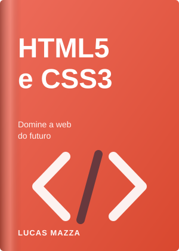
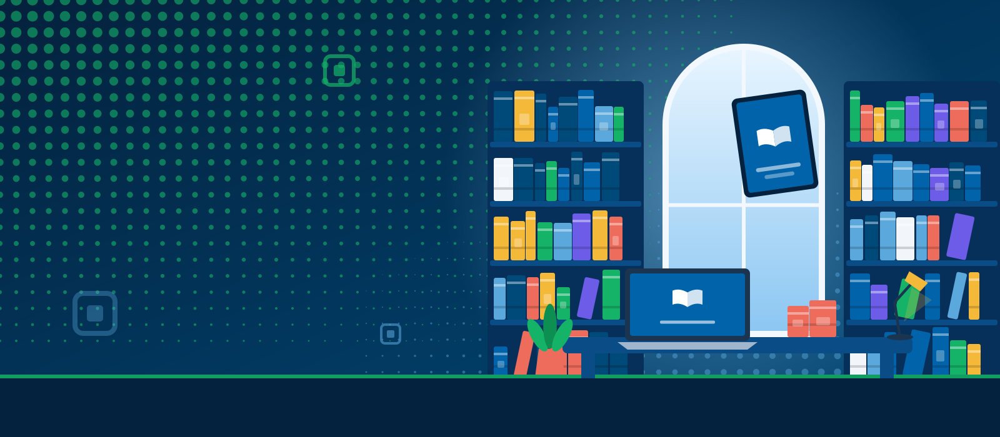
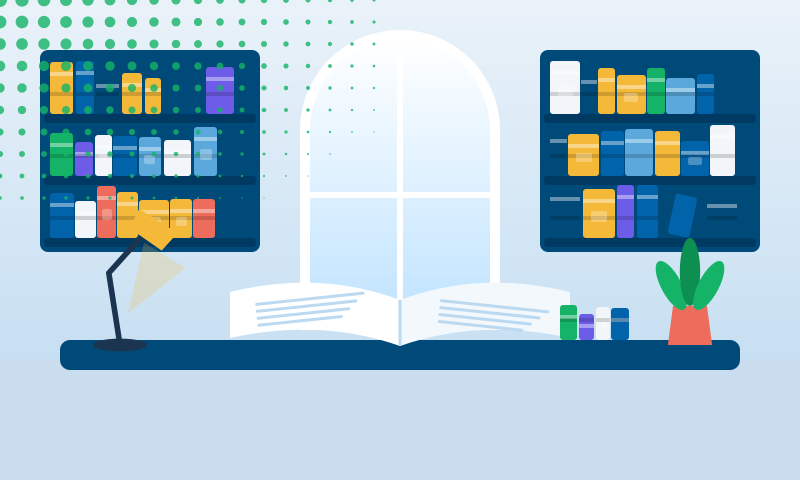
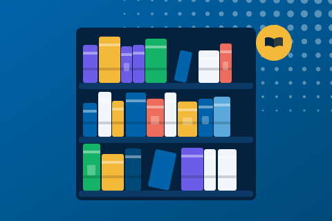
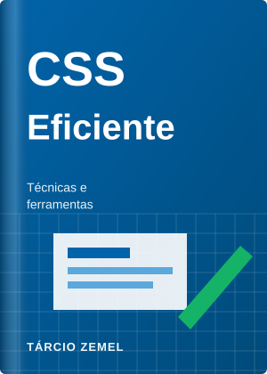
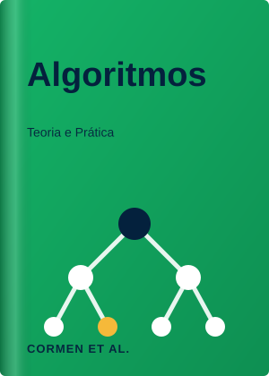
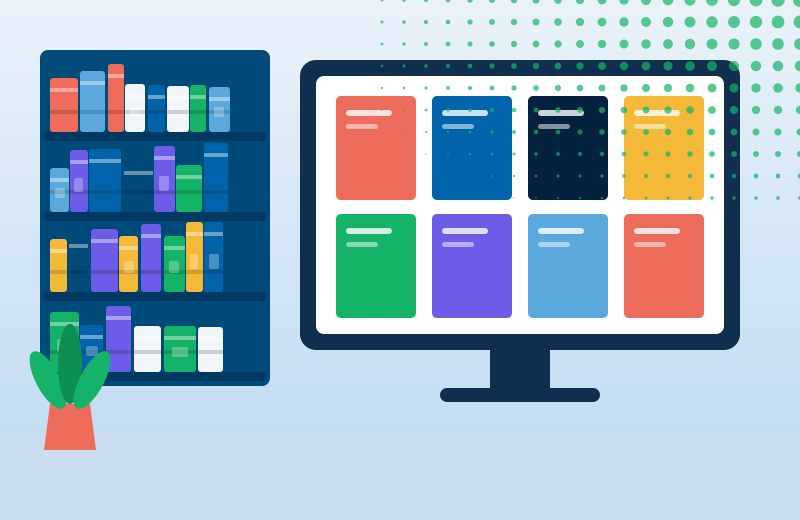

Web
HTML5 e CSS3
Introdução prática à criação de sites com HTML5 e CSS3, com exemplos para testar passo a passo.
Saiba mais
- Autoria
- Lucas Mazza
- Indicado para
- Quem está começando em desenvolvimento web, como na disciplina de Design Web.

Livros, materiais acadêmicos e conteúdos de apoio ao estudo em um só lugar, para acessar do computador ou do celular.
Ver os livrosA Biblioteca Digital UniFECAF reúne livros, materiais acadêmicos e conteúdos de apoio para acompanhar o estudante em todas as etapas da graduação. Tudo fica em um só lugar, organizado por categorias e pensado para ser encontrado em poucos cliques.

A plataforma foi desenhada para quem estuda no computador, no tablet ou no celular. O aluno descobre os destaques do acervo, conhece os serviços oferecidos pela biblioteca e sabe a quem recorrer quando precisa de ajuda.

Estude no seu ritmo, de onde estiver.

Web
Introdução prática à criação de sites com HTML5 e CSS3, com exemplos para testar passo a passo.

Web
Técnicas e ferramentas para escrever estilos mais organizados, fáceis de manter e de reaproveitar.
Programação
Práticas para escrever código legível, simples de entender e de manter ao longo do tempo.
Design e UX
Uma introdução à usabilidade na web: como deixar uma página clara para quem a utiliza.

Algoritmos
Referência clássica sobre o projeto e a análise de algoritmos e estruturas de dados.
Engenharia de software
Catálogo de soluções reutilizáveis para problemas recorrentes no projeto de software orientado a objetos.

Acervo digital
Reúne os livros e materiais disponíveis para consulta online. O estudante navega pelas categorias, conhece os destaques e encontra o que precisa para a disciplina em poucos cliques.
Apoio ao estudo
Concentra conteúdos complementares, como guias de leitura e materiais de revisão, para quem quer aprofundar o que viu em aula e estudar com mais autonomia.
Atendimento e suporte
Esclarece dúvidas sobre o uso da biblioteca e orienta o aluno na busca por materiais. O contato é feito pelos canais informados na seção de contatos.
Quer sugerir um livro, tirar uma dúvida sobre o acervo ou pedir ajuda para encontrar um material? Fale com a equipe da biblioteca ou visite um dos nossos polos.
Av. Vida Nova, 166Prefere escrever? Envie uma mensagem para biblioteca@exemplo.com.br ou conheça a instituição no site da UniFECAF (abre em uma nova aba).